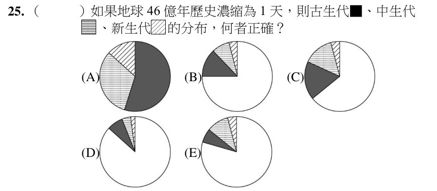

考前速記先複習這題要用的知識點與公式
- 地質年代占比：46 億年中，古生代 5.41 億年（約 11.8%）、中生代 1.86 億年（約 4.0%）、新生代 0.66 億年（約 1.4%）。
- 換算：濃縮成一天（24 小時）：古生代約 2.8 小時、中生代約 1 小時、新生代約 20 分鐘。
- 畫圓餅：圓心角＝占比×360°；三者合計只占圓的最後約 17%（約 61°），其餘大片是前寒武紀。
如果地球 46 億年歷史濃縮為 1 天，則古生代（黑色）、中生代（橫線）、新生代（斜線）的分布，何者正確？

看答案與詳解收起
答(D)
解
古生代 ≈ 42°、中生代 ≈ 14.6°、新生代 ≈ 5°，三塊都很小，排在圓的最後（緊接 12 點鐘方向前）。選項中黑色（古生代）扇形最小、依序是更小的中生代與新生代的是 (D)；(A) 古生代占了一半以上、(B)(C)(E) 古生代過大，都不對。
為什麼猜這題：「46 億年濃縮成一天」是地球歷史最常見的觀念題，要有「古生代很短、新生代更短」的直覺。
小結
古生代＋中生代＋新生代只占地球歷史的最後約 17%；「濃縮成一天」就是把年代÷46 億再乘 24 小時。